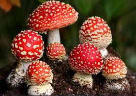
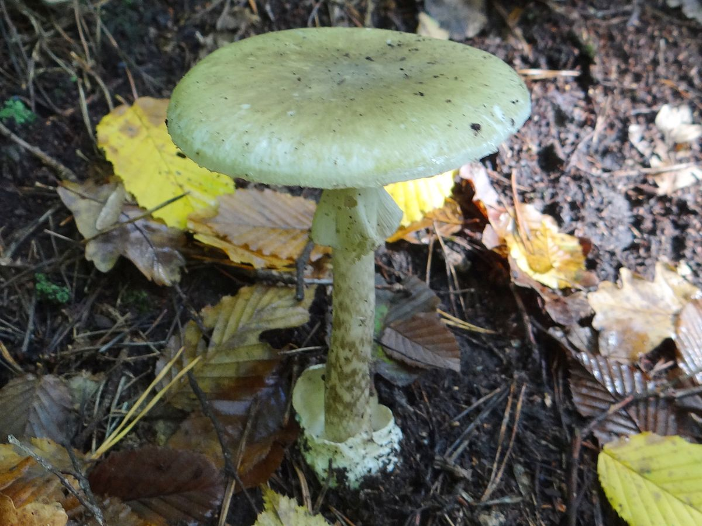
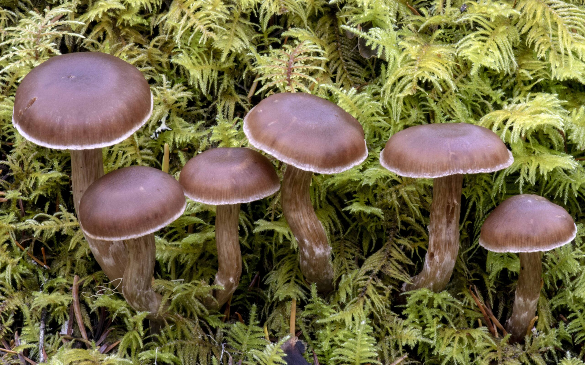

Muchomor czerwony
Opis:
Jaskrawoczerwony kapelusz z białymi plamkami, biały trzon. Występuje w leśnych miejscach, szczególnie w lasach iglastych i mieszanych.
Charakterne cechy:
Jaskrawy kolor kapelusza i białe plamki na powierzchni.
Objawy zatrucia:
Nudności, wymioty, zawroty głowy, halucynacje, dezorientacja.

Zielony muchomor
Opis:
Zielony lub oliwkowy kapelusz, gładki trzon z białą osłoną. Występuje głównie w lasach, często w pobliżu dębów.
Charakterne cechy:
Oliwkowy kolor czapki i gładka tekstura.
Objawy zatrucia:
Na początku brak objawów, później: silny ból brzucha, biegunka, żółtaczka, co może prowadzić do śmierci.

Biały muchomor
Opis:
Biały kapelusz, trzon i włóknisty miąższ. Występuje w wilgotnych miejscach, często w pobliżu zbiorników wodnych.
Charakterne cechy:
Całkowicie biały wyłacz bez jaskrawych kolorów
Objawy zatrucia:
Nudności, wymioty, bóle brzucha, zaburzenia pracy wątroby.
_new.jpg)
Płucnica żółta
Opis:
Mały grzyb o brązowym kapeluszu, pokryty drobnymi łuskami. Występuje w lasach, na opadłych drzewach i w wilgotnych miejscach.
Charakterne cechy:
Mały rozmir i brązowa czapka o łuskowatej fakturze.
Objawy zatrucia:
Nudności, wymioty, bóle brzucha, uszkodzenie wątroby, mogą prowadzić do śmierci.

Cortinarius rubellus
Opis:
Grzyb o brązowym kapeluszu i delikatnej zasnówce. Występuje w lasach, głównie pod drzewami liściastymi.
Charakterne cechy:
Ciemny kolor kapelusza z cienką folią.
Objawy zatrucia:
Nudności, wymioty, silny ból brzucha, uszkodzenie nerek, może prowadzić do śmierci.
.jpg)
Smardzr
Opis:
Czerwony kapelusz przypominający mózg. Występuje w wilgotnych miejscach, głównie w lasach.
Charakterystyczne cechy:
Nieregularny kształt kapelusza, który przypomina ludzkie mózg
Objawy zatrucia:
Ostry ból brzucha, nudności, skurcze, mogą prowadzić do poważnych komplikacji.
Prawdziwek żółty
Opis:
Pomarańczowy lub żółty kapelusz, często z falistym brzegiem. Rośnie w lasach iglastych i liściastych.
Charakterystyczne cechy:
Jaskrawy kolor i faliste krawędzie kapelusza.
Objawy zatrucia:
Nudności, wymioty, bóle brzucha.
.jpg)
Włókniak
Opis:
Grzyby z brązowym lub szarym kapeluszem i cienkim trzonem. Występują w lasach liściastych i iglastych.
Charakterystyczne cechy:
Cienki trzon i nieprzyjemny zapach.
Objawy zatrucia:
Nudności, wymioty, biegunka, objawy podobne do zatrucia cyjanowodorem.
.jpg)
Zasłonak
Opis:
Grzyby o brązowym lub pomarańczowym kapeluszu, często z zasnówką. Rośnie w wilgotnych lasach.
Charakterystyczne cechy:
Obecność zasnówki i zmienny kolor kapelusza.
Objawy zatrucia:
Bóle brzucha, bóle głowy, zaburzenia w pracy nerek.

Krowiak
Opis:
Grzyb o jasnym kapeluszu i białym trzonie. Rośnie w lasach, na łąkach i w miejscach zacienionych.
Charakterystyczne cechy:
Jasny kolor kapelusza z ciemniejszymi łuskami.
Objawy zatrucia:
Nudności, wymioty, silne bóle brzucha.
.jpg)